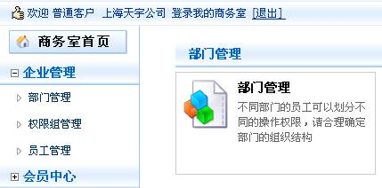
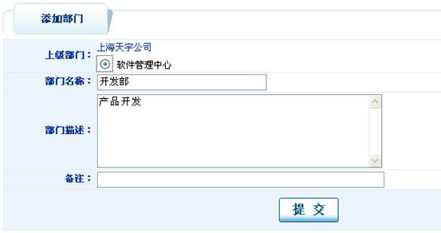

我有几个部门，该怎样设置呢
| 部门管理 |
|  |
| 部门的添加： 打开“部门管理”，点击 |
|  |
| 部门的管理： 打开“部门管理”页面，点击“软件管理中心”： |
 |
| 业务权限划分：根据角色设定权限，这样当角色被分配给某个员工时，这个员工拥有这个角色所有的权限。 给角色“后台管理”分配企业商务室下所有权限： 打开“业务权限划分”页面，选择角色名称：后台管理，服务名称：企业商务室： |
| 点击修改和删除按钮可直接操作。 |
|
我有几个部门，该怎样设置呢 |
|||||||||
|